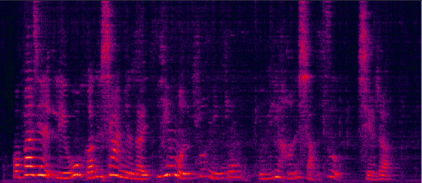
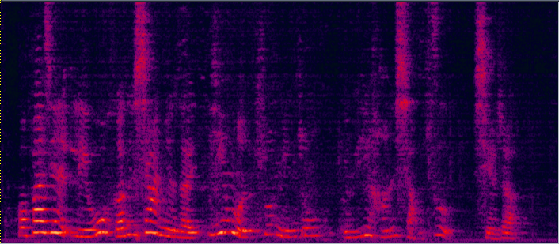

submitted to ICASSP2021, *Yong XU (yong.xu.ustc@gmail.com), *Zhuohuang Zhang, Meng Yu, Shi-Xiong Zhang, Lianwu Chen, Dong Yu, Tencent AI lab, Bellevue, WA, USA
Recently we proposed an all-deep-learning minimum variance distortionless response (ADL-MVDR) method where the unstable matrix inverse and principal component analysis (PCA) operations in the MVDR were replaced by recurrent neural networks (RNNs). However, it is not clear whether the success of the ADL-MVDR is owed to the calculated covariance matrices or following the MVDR formula. In this work, we demonstrate the importance of the calculated covariance matrices and propose three types of generalized RNN beamformers (GRNN-BFs) where the beamforming solution is beyond the MVDR and optimal. The GRNN-BFs could predict the frame-wise beamforming weights by leveraging on the temporal modeling capability of RNNs. The proposed GRNN-BF method obtains better performance than the state-of-the-art ADL-MVDR and the traditional mask-based MVDR methods in terms of speech quality (PESQ), speech-to-noise ratio (SNR), and word error rate (WER).
Demo 1: (waveforms aligned with the spectrograms shown in Fig. 2 of the paper): [Sorry for that the demos below are all in Mandarin]:


| Mixture (2-SPK overlapped + non-stationary additive noise) wav | cRF-based Purely NN (has non-linear distortion) wav | cRF-based MVDR [11] Jointly Trained (distortionless but with high residual noise level) wav | cRF-based Multi-tap MVDR [11] Jointly trained (distortionless but still has some residual noise) wav |
  
| cRF-based ADL-MVDR [10] (distortionless but still has some audible residual noise) wav | Proposed cRF-based GRNN-BF-II (distortionless and much less residual noise) wav | Reverb Clean (Reference clean) wav |
Demo 2: to be continued
Demo 3: to be continued
Demo 4: Real-world far-field recording and testing:

15-element non-uniform linear microphone array and colocated 180 degree wide-angle camera for our real-world video and audio recording
For the real-world videos, as the 180-degree wide-angle camera is colocated with the linear mic array, the rough DOA of the target speaker could be estimated according to the location of the target speaker in the whole camera view [1]. Face detection and face tracking are conducted to track the target speaker's DOA. (Note that in our simulation data, there is no need to do face tracking, because the video of each overlapped speaker is already in single-face mode after the data cleaning and filtering process.)
| Real-world far-field two-speaker mixture recorded by the hardware (camera and microphone array ) above | Real-world separated male speaker's speech by the proposed multi-tap MVDR method (face detected and tracked in the red rectangle) |
Demo 5: Real-world far-field recording and testing 2:
| Real-world far-field two-speaker mixture recorded by the hardware (camera and microphone array ) above | Real-world separated female speaker's speech by the proposed multi-tap MVDR method (face detected and tracked in the red rectangle). |
Reference:
[1] Audio-Visual Speech Separation and Dereverberation with a Two-Stage Multimodal Network, Ke Tan, Yong XU, Shixiong Zhang, Meng Yu, Dong Yu, accepted to IEEE Journal of Selcted Topics in Signal Processing, 2020
[2] Multi-modal Multi-channel Target Speech Separation, Rongzhi Gu, Shi-Xiong Zhang, Yong Xu, Lianwu Chen, Yuexian Zou, Dong Yu, accepted to IEEE Journal of Selcted Topics in Signal Processing, 2020
[3] Time Domain Audio Visual Speech Separation, Jian Wu, Yong Xu, Shi-Xiong Zhang, Lian-Wu Chen, Meng Yu, Lei Xie, Dong Yu, ASRU2019
[4] A comprehensive study of speech separation: spectrogram vs waveform separation Fahimeh Bahmaninezhad, Jian Wu, Rongzhi Gu, Shi-Xiong Zhang, Yong Xu, Meng Yu, Dong Yu, Interspeech2019
[5] Du, Jun, Qing Wang, Tian Gao, Yong Xu, Li-Rong Dai, and Chin-Hui Lee. "Robust speech recognition with speech enhanced deep neural networks.". Interspeech2014
[6] Xu, Yong, Jun Du, Li-Rong Dai, and Chin-Hui Lee. "A regression approach to speech enhancement based on deep neural networks." IEEE/ACM Transactions on Audio, Speech, and Language Processing 23, no. 1 (2014): 7-19.
[7] Luo, Yi, and Nima Mesgarani. "Conv-tasnet: Surpassing ideal time–frequency magnitude masking for speech separation." IEEE/ACM transactions on audio, speech, and language processing 27.8 (2019): 1256-1266.
[8] Heymann, Jahn, Lukas Drude, and Reinhold Haeb-Umbach. "Neural network based spectral mask estimation for acoustic beamforming." 2016 IEEE International Conference on Acoustics, Speech and Signal Processing (ICASSP). IEEE, 2016.
[9] Benesty, Jacob, Jingdong Chen, and Emanuël AP Habets. Speech enhancement in the STFT domain. Springer Science & Business Media, 2011.
[10] Zhang, Zhuohuang, Yong Xu, Meng Yu, Shi-Xiong Zhang, Lianwu Chen, and Dong Yu. "ADL-MVDR: All deep learning MVDR beamformer for target speech separation." arXiv preprint arXiv:2008.06994 (2020).
[11] Xu, Yong, Meng Yu, Shi-Xiong Zhang, Lianwu Chen, Chao Weng, Jianming Liu, and Dong Yu. "Neural Spatio-Temporal Beamformer for Target Speech Separation." accepted to Interspeech2020.